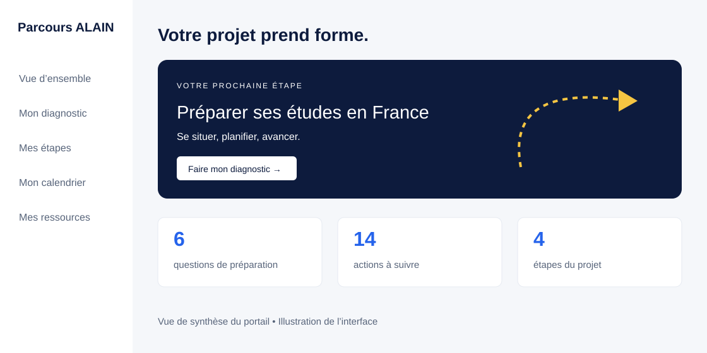

Structurer
Définir la cible, articuler projet académique et professionnel, organiser les étapes et concevoir les activités de préparation.
Relier le projet d’études, l’apprentissage et le passage à l’action.
Un dispositif pour accompagner les candidats aux études en France, en particulier les étudiants de Côte d’Ivoire. Le portail V1 complète la logique de formation par des outils personnels de préparation.

Le besoin visé est double : construire un projet cohérent entre études et avenir professionnel, puis organiser les actions nécessaires à sa préparation. Le portail aide le candidat à se situer, consulter les sources officielles et suivre ses propres étapes.
Hypothèse de conception : une feuille de route explicite peut soutenir l’autonomie et réduire les oublis. Cette hypothèse reste à tester auprès des utilisateurs du portail.
Définir la cible, articuler projet académique et professionnel, organiser les étapes et concevoir les activités de préparation.
Traduire le parcours en diagnostic, checklists, calendrier, carnet et ressources. Développer le portail avec assistance IA et une charte cohérente.
Contrôler les sources institutionnelles, tester les interactions et expliciter les limites de l’autoévaluation et du stockage local.
| Objectif | Activité proposée | Trace observable |
|---|---|---|
| Argumenter la cohérence du projet | Relier acquis, formation visée et objectif professionnel | Argumentaire dans le carnet |
| Identifier les priorités de préparation | Répondre au diagnostic de six questions | Priorités issues des réponses déclaratives |
| Organiser les démarches | Vérifier les sources et planifier les dates pertinentes | Calendrier personnel exportable |
| Suivre ses actions | Actualiser les checklists des quatre étapes | Actions cochées, à confronter aux réalisations |
Tableau de bord, recommandations déterministes, carnet de projet, export/restauration du suivi et export de calendrier au format .ics. Le portail utilise HTML, CSS et JavaScript ; le parcours de formation est hébergé sur WordPress avec Tutor LMS.
Le score reflète uniquement les réponses de l’utilisateur. Il ne constitue ni une évaluation certifiante ni une probabilité d’admission ou de visa. Les dates officielles ne sont pas préremplies.
Aucun résultat d’efficacité n’est revendiqué pour le portail. Les indicateurs ci-dessous constituent un plan de mesure proposé.
Conception fondée sur les documents du projet Parcours ALAIN, sa version commerciale et sa charte graphique. Les modalités administratives restent du ressort des sources officielles :
Sources consultées le 21 octobre 2026. Parcours ALAIN est un accompagnement pédagogique indépendant, sans affiliation à Campus France ni garantie d’admission ou de visa.
Retour aux projets